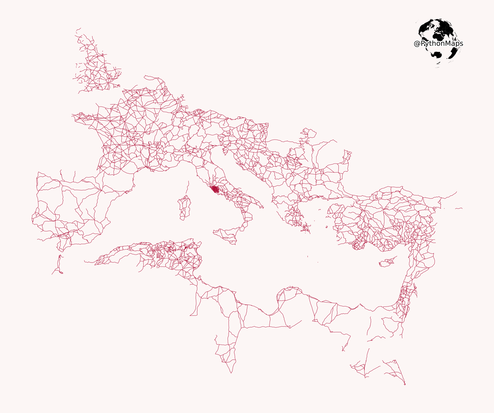

PythonMaps
Mapping the world with
{kind=link}
Roman Roads
{kind=link}

Some information about roman roads.
First things first, we need data. The data comes from the following citation, "DARMC Scholarly Data Series Citation: McCormick, M. et al. 2013. "Roman Road Network (version 2008)," DARMC Scholarly Data Series, Data Contribution Series #2013-5. DARMC, Center for Geographic Analysis, Harvard University, Cambridge MA 02138.". In this example, the data has been downloaded and placed in a folder called "resources". The directory structure of this project is shown below.
resources
resources/Roman_roads.shp
roman_roads.py
This is a very simple map to make and only requires geopands and matplotlib to generate. The data source contains a few different columns of info so more complicated maps can be generated if one so desires. For example, the length of the road is a field and maps showing the location of roads longer than a certain distance could be shown. First thing to do is to import the modules.
import matplotlib.pyplot as plt
import geopandas as gpd
Then we read the data. Geopandas is built to load shapefiles and does this for us.
roads = gpd.read_file("resources/Roman_roads.shp")
This is a PythonMaps project and hence, we need the logo.
im = plt.imread('../globe.png')
We can then plot the data. PythonMaps likes very simple styling, but matplotlib gives you the freedom to style your map in whatever way you like.
fig, ax = plt.subplots(facecolor='#FCF6F5FF')
fig.set_size_inches(7, 3.5)
roads.plot(axes=ax, color='#AE0E36FF', lw=0.2)
ax.axis('off')
newax = fig.add_axes([0.67, 0.84, 0.08, 0.08], anchor='NE', zorder=-1)
newax.imshow(im)
newax.axis('off')
plt.tight_layout()
plt.show()